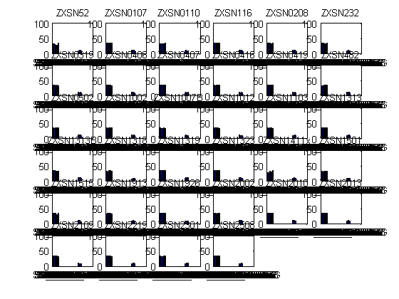

Contents
display total num of trials per subject,
before and after automatic trial removal
for s=1:numel(subjects)
subj = subjects{s};
outpath = [outdir subj '/'];
load([outpath 'batch2_summary.mat']);
disp([subj ' ' num2str(trial_stats.orig_num_trials) ' ' num2str(trial_stats.new_num_trials)]);
end
ZXSN52 194 192
ZXSN0107 214 214
ZXSN0110 214 202
ZXSN116 216 215
ZXSN0208 215 213
ZXSN232 213 208
ZXSN0319 211 207
ZXSN0406 216 213
ZXSN0407 215 215
ZXSN0416 211 211
ZXSN0419 214 214
ZXSN482 213 210
ZXSN0502 213 212
ZXSN1002 211 209
ZXSN1007B 215 203
ZXSN1012 216 210
ZXSN1103 211 205
ZXSN1313 215 214
ZXSN1313B 213 208
ZXSN1318 210 199
ZXSN1319 216 215
ZXSN1323 215 213
ZXSN1411x 197 191
ZXSN1501 215 194
ZXSN1515 213 205
ZXSN1913 214 207
ZXSN1926 212 212
ZXSN2002 214 214
ZXSN2010 212 212
ZXSN2013 213 212
ZXSN2109 209 209
ZXSN2219 215 211
ZXSN2301 210 210
ZXSN2508 213 211
display number of trials per condition
figure;
dim = ceil(sqrt(numel(subjects)));
for s=1:numel(subjects)
subj = subjects{s};
outpath = [outdir subj '/'];
load([outpath 'batch2_summary.mat']);
subplot(dim,dim,s,'align');
bar(trial_stats.trial_count);
set(gca,'xlim',[0 numel(trial_stats.trial_count)+1],'xtick',[1:numel(allowable_values)],'xticklabel',conditions,'ylim',[0 100]);
title(subj);
axcopy(gcf);
end
